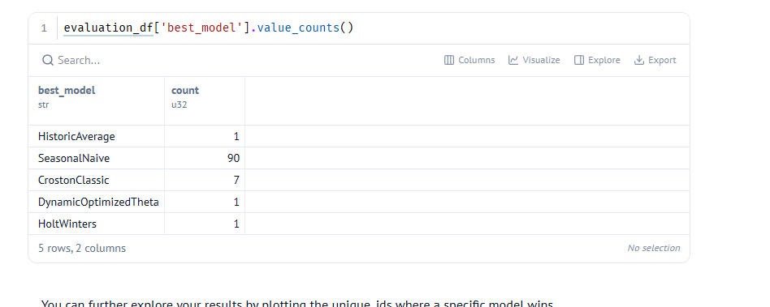
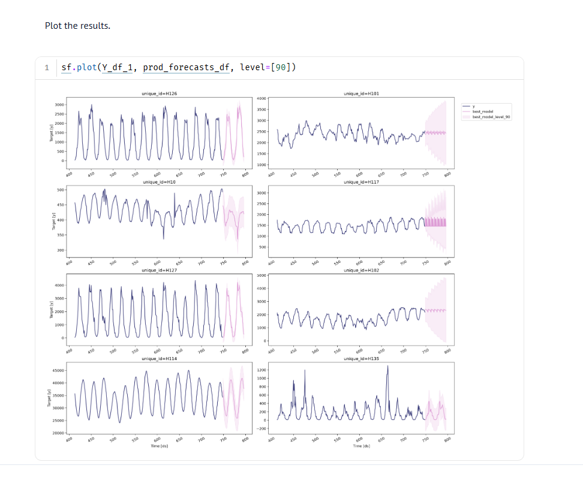
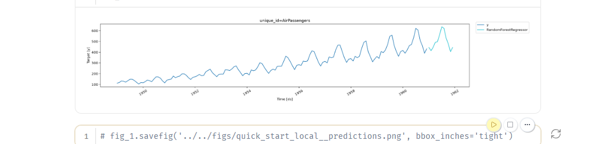

Viikko 45: Aikasarjojen ennustaminen (Time Series Forecasting)
Tällä viikolla perehdyin aikasarjadatan mallintamiseen ja ennustamiseen. Aikasarjoissa havaintojen ajallinen järjestys on kaikkein tärkein asia, joten perinteistä satunnaista train-test-jakoa (train_test_split) ei voi käyttää ilman tietovuotoa (data leakage). Ensimmäisessä tehtävässä kokeilin klassisia aikasarjamalleja Nixtlan StatsForecast-kirjastolla ja Polarsilla.
1. Klassiset tilastolliset mallit (StatsForecast ja Polars)
Tehtävässä (800_statsforecast_polars.py) käytettiin M4-kilpailun tuntikohtaista datasettiä. Tein koodiin tehtävänannon mukaiset muutokset ja kokeilut:
- Aineiston laajentaminen: Otin mukaan aluksi 10 sarjan sijasta 50 eri aikasarjaa (
[:50]). Kasvatin myös havaintoikkunaa viikosta kahteen viikkoon (14 * 24tuntia). - Kausivaihtelun jakso: Muutin malleissa
SeasonalNaivejaDynamicOptimizedTheta(DOT) kausijakson pituudeksiseason_length = 168(viikkosykli eli 7 päivää × 24 tuntia). Oletuksena oli 24 tuntia. - Virhefunktio: Vaihdoin arviointimittariksi MAE:n (Mean Absolute Error) oletuksena olleen MSE:n tilalle.
Tulokset ja mallien suorituskyky
Arvioin mallit liukuvalla ristiinvalidoinnilla (sliding window cross-validation). Sen jälkeen valitsin jokaiselle aikasarjalle parhaan mallin MAE-virheen perusteella:

| Malli | Voitot sarjoissa (MAE) |
|---|---|
| SeasonalNaive | 90 |
| CrostonClassic | 7 |
| DynamicOptimizedTheta | 1 |
| HistoricAverage | 1 |
| HoltWinters | 1 |

Pohdinta ja kysymysten analyysi
-
Miksi SeasonalNaive voitti niin selvästi?
Tuntikohtaisessa datassa on yleensä tosi vahva ja tasainen viikkorytmi (esimerkiksi arkipäivät vs. viikonloput). Kun asetukseksi laitettiinseason_length = 168,SeasonalNaivetoistaa suoraan viikon takaisen luvun. Monimutkaisemmat mallit (kuten Holt-Winters tai Theta) yrittävät usein tasoittaa dataa liikaa. Silloin terävät viikoittaiset huiput jäävät liian mataliksi ja virhe kasvaa. -
Miksi liukuva ristiinvalidointi on parempi kuin vain yksi testipäivä?
Yksi ainoa testipäivä voi osua poikkeukselliseen hetkeen tai satunnaiseen häiriöön. Liukuva ristiinvalidointi (n_windows = 2,step_size = 24) testaa malleja useammassa ajankohdassa peräkkäin. Tämä varmistaa, ettei mallin hyvä tulos johdu pelkästä tuurista yhtenä päivänä. -
Oma kuvaaja-analyysi:
- Sarjoissa kuten H126 ja H114 aaltoliike toistuu tosi tasaisesti ja ennustettavasti. Siksi viikon takaisen arvon suora toisto toimii niissä melkein täydellisesti.
- Sarjoissa, joissa näkyy epäsäännöllisiä kysyntäpiikkejä tai pätkivää dataa (kuten H135),
SeasonalNaivetoistaa vanhan satunnaispiikin turhaan eteenpäin. Silloin vaihtelua tasoittavat mallit tai harvan kysynnän menetelmät (CrostonClassic) ovat turvallisempi ja parempi valinta.
2. Koneoppimismallit aikasarjoissa (MLForecast ja Polars)
Toisessa tehtävässä (801_mlforecast_polars_quickstart.py) kokeilin koneoppimiseen perustuvaa aikasarjamallinnusta Nixtlan MLForecast-kirjastolla ja Polarsilla. Aineistona käytettiin klassista lentomatkustajien määrää kuvaavaa aikasarjaa (AirPassengers).
Koneoppimismallit eivät ymmärrä aikariippuvuuksia suoraan. Siksi data pitää muuttaa taulukkomuotoon viiveiden (lags) ja erotusten avulla.
Tehdyt kokeilut ja muutokset
- Mallin vaihto: Korvasin esimerkin tavallisen lineaarisen regression (
LinearRegression) epälineaarisella satunnaismetsällä:RandomForestRegressor(random_state=42). - Viivepiirteiden (lags) rikastaminen: Alkuperäisessä koodissa oli mukana vain yksi vuosiviive
lags=[12]. Lisäsin mallille enemmän lähimenneisyyden kontekstia määrittämällä viiveiksi:
lags = [1, 2, 3, 6, 12] - Trendin poisto: Pidin mukana kohdemuuttujan ensimmäisen erotuksen (
target_transforms=[Differences([1])]), jotta sarjasta saadaan stationaarinen ennen puumallin opettamista.
Tulokset ja ennusteen visualisointi
Opetin mallin ja ennustin lentomatkustajien määrät seuraavalle 12 kuukaudelle vuodelle 1961:

Huomiot ja analyysi
-
Trendin ja kausivaihtelun hallinta:
Pelkkä satunnaismetsä ei osaa ennustaa nousevaa trendiä suoraan raakadatan pohjalta. Koska aikasarjalle tehtiin ensimmäinen erotus (Differences([1])), malli oppi ennustamaan kuukausittaista muutosta tason sijaan. Kun erotukset muutettiin takaisin alkuperäiselle asteikolle, malli jatkoi nousevaa trendiä luontevasti eteenpäin. -
Viiveiden (
lags) merkitys:
Lähikuukausien viiveet (1, 2, 3) toivat mallille tietoa hetkellisestä liikesuunnasta (momentum). Vuosiviive (12) puolestaan antoi mallille tiedon kesän matkustuspiikeistä. Kuvaajasta näkyy hyvin, että vuoden 1961 kesäpiikki ja sitä seuraava talven lasku toistuvat tarkasti vanhan kaavan mukaisesti.